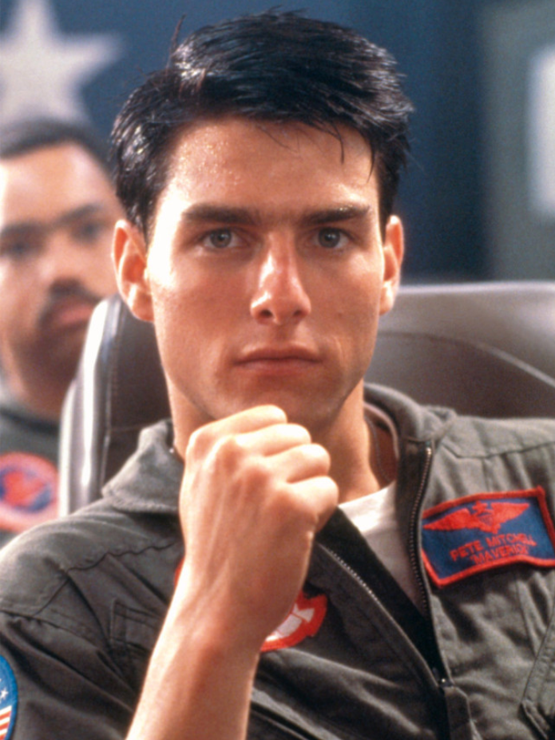

피트 미첼 Pete Mitchell
Lt. Pete 'Maverick' Mitchell. 피트 '매버릭' 미첼 대위. 비행 실력은 항모비행전대 내에서 2위일 정도로 우수하지만 제멋대로인 기질이 있어서 위험한 비행 등으로 우수한 실력을 갖추고 있음에도 상관 스팅어의 골칫거리가 될 정도로 제멋대로인 인물이다.
On March 3, 1969 the United States Navy established an elite school for the top one percent of its pilots. Its purpose was to teach the lost art of aerial combat and to insure that the handful of men who graduated were the best fighter pilots in the world. They succeeded. Today, the Navy calls it Fighter Weapons School. The flyers call it: 1969년 3월 3일, 미합중국 해군은 최상위 1%의 전투기 조종사들을 위한 엘리트 교육시설을 설립하였다. 해당 학교는 잃어버린 근접 공중 전투감각을 향상시켜 교육생들을 세계 최고의 조종사로 만드는 데 그 목적이 있었다. 그들은 성공했다. 오늘날, 미 해군에선 이 학교를 항공전 학교라고 부른다. 그리고 조종사들이 부르는 이름은: TOP GUN
Lt. Pete 'Maverick' Mitchell. 피트 '매버릭' 미첼 대위. 비행 실력은 항모비행전대 내에서 2위일 정도로 우수하지만 제멋대로인 기질이 있어서 위험한 비행 등으로 우수한 실력을 갖추고 있음에도 상관 스팅어의 골칫거리가 될 정도로 제멋대로인 인물이다.

천체물리학(astrophysics) 박사이며, 군인이 아닌 민간인 신분이지만, 베일에 싸인 적의 신형 전투기 MiG-28에 대해 연구한 이론지식이 군에 인정받아 탑건 스쿨에 초빙된 전문가이다. 파일럿들을 상대로 자신이 연구하고 분석한 MiG-28의 비행 특성에 대한 이론적인 강의와 그에 따른 대응 전술기동 등을 검토하고 조언한다.
대대 콜사인(squadron call sign)은 아이스맨, 본명은 톰 카잔스키. 계급은 대위.